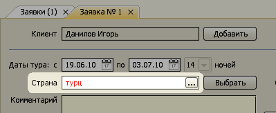

Пользовательские настройки
Главное меню → Настройки → Пользовательские настройки
Размер шрифта
Выбор размера шрифта.
Если монитор имеет высокое разрешение, и буквы в программе очень мелкие, необходимо скачать и установить программу в ту же папку из специального дистрибутива.
Отключить авто-переключение раскладки клавиатуры
По умолчанию программа автоматически устанавливает подходящий язык ввода для каждого поля в зависимости от информации, хранящемся в данном поле. Например, для фамилии и имени клиента устанавливается русский язык, для названия отеля - английский язык. При выборе данной опции данное автоматическое переключение будет отключено.
Не открывать журналы документов при запуске
По умолчанию программа открывает журнал документов, ассоциированный с основной ролью пользователя. Для Менеджера это журнал заявок, для Кассира - журналы приходов и расходов. При включении данной опции после старта программы эти журналы не будут открываться.
Включить поиск и редактирование в ссылочных полях
Данная опция предназначена для опытных пользователей. При ее включении появляются 2 дополнительные функции работы со ссылочными полями:
1) Выбор значения ссылочного поля с помощью поиска по введенной подстроке.
Например, если вы хотите в заявке выбрать страну "Турция", введите в поле "Страна" значение "турц" и нажмите Enter.
Если в справочнике стран есть Турция, она будет выбрана в качестве значения данного поля. При этом цвет фона ссылочного поля изменится с белого на серый, что означает "значение выбрано".
В противном случае, программа просигнализирует об отсутствии страны, название которой начинается на "турц", выделив строку поиска "турц" красным цветом. Цвет фона поля останется белым, что означает "значение не выбрано".

2) Открытие элемента справочника, на который ссылается поле.
Данная функция позволяет просматривать и редактировать элемент справочника, на который ссылается поле. При наведении курсора мыши на ссылочное поле справа появляются 2 кнопки. Нажмите на первую (с картинкой документа) кнопку...
...и откроется соответствующий элемента справочника.
Остались вопросы? Напишите нам на e-mail